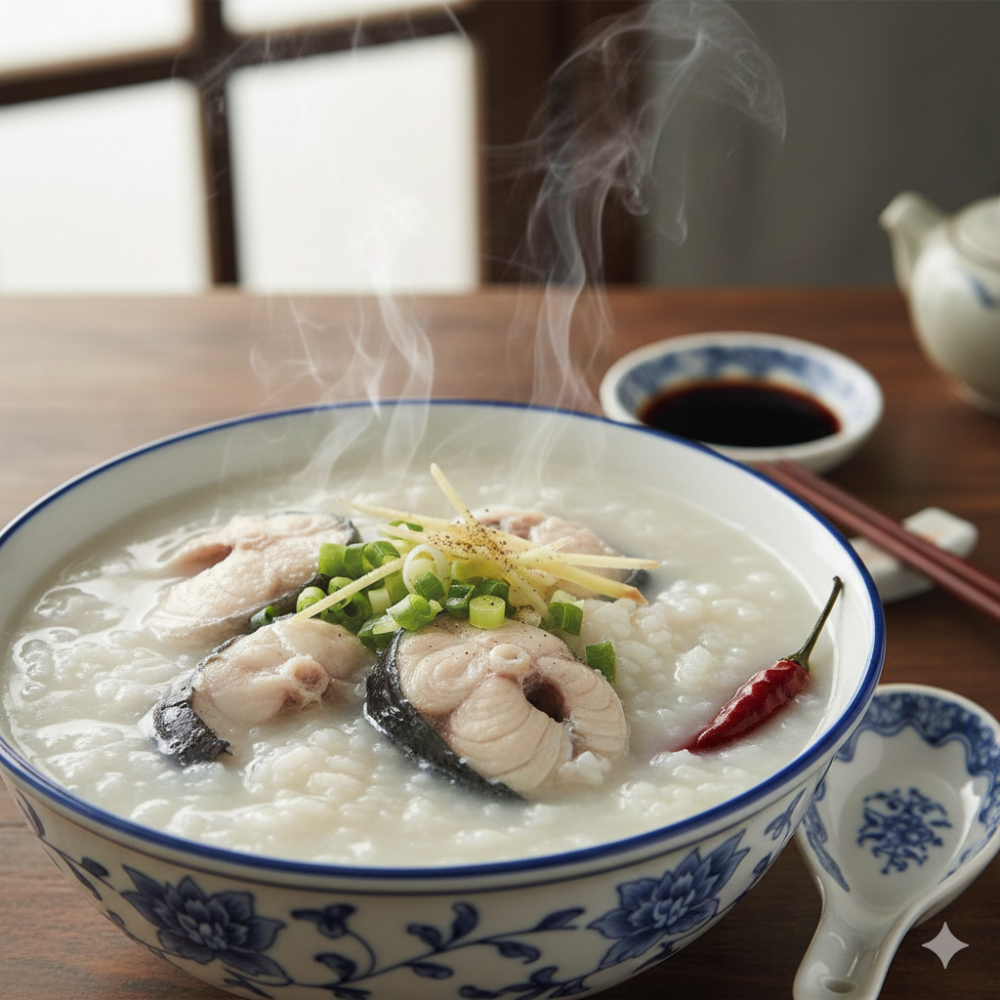

← 回到首頁
虱目魚肚粥

【歷史故事】
虱目魚被稱為台灣的「國寶魚」，早在明鄭時期就有記載。高雄近海與養殖業發達，虱目魚是當地最常見的蛋白質來源。早期農民或勞工需要在清晨補充能量，因此發展出將鮮魚肚配上熱騰騰「飯湯」的吃法，成為港都流傳百年的早餐文化。
【需要材料】
- 新鮮虱目魚肚 1 片
- 白飯 1 碗
- 魚骨高湯 500ml
- 嫩薑絲、芹菜珠 少許
- 調味料：鹽、胡椒粉、米酒
【料理方法】
- 將虱目魚肚洗淨擦乾，魚皮朝下入鍋煎至金黃焦香，逼出油脂。
- 另起一鍋煮沸高湯，加入米酒去腥。
- 將白飯放入碗中，淋入滾燙高湯（飯湯做法米粒不煮爛）。
- 放上煎好的魚肚，撒上薑絲、芹菜與胡椒粉即可。